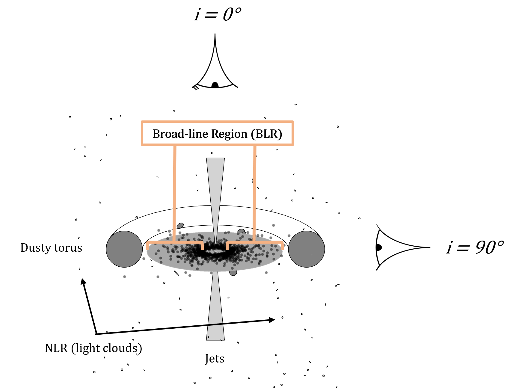
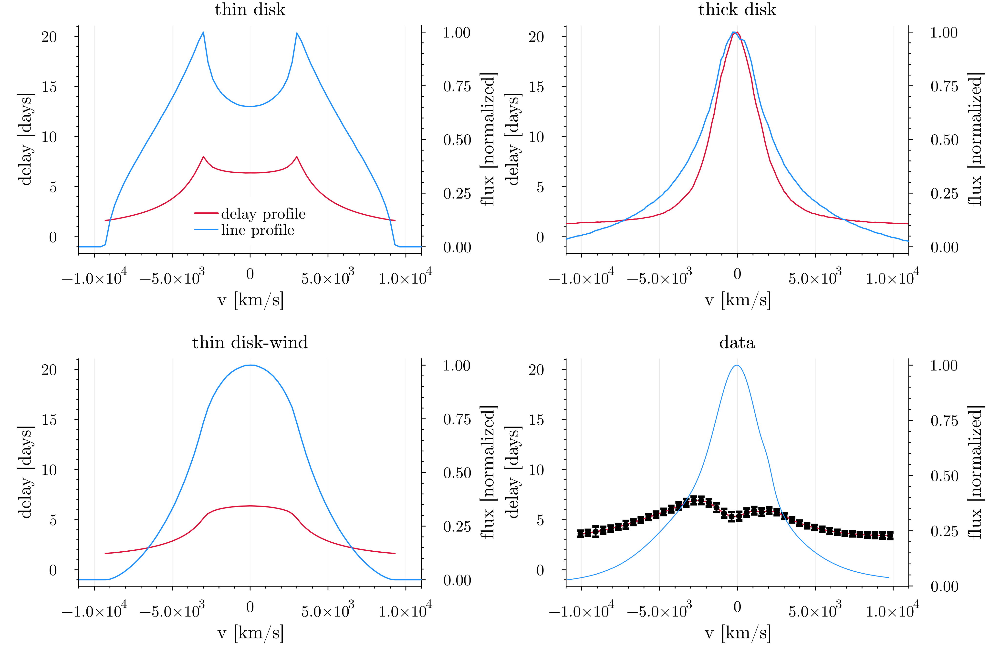

A schematic of a new class of model we propose for modeling the broad-line region, as this paper demonstrates that current popular models fail to fit all of the data products.
What do you do when the models are wrong?
My second paper — "Reverberation Mapping Data of NGC 5548 Imply a Multicomponent Broad-Line Region" — has just been published in the Astrophysical Journal! What started as an "easy" follow-up project to my first paper ended up becoming a nearly two-year labor of love and deep discovery for me that I'm really excited to share with you. While my first work was an accomplishment just because it was my first, it was doing this project that I really found myself loving hte process of research and getting really excited about the results I was finding. If you're curious, the official version of the paper (with all the gory technical details) is available in its entirety here, but I'm writing this up again as a plain-language summary for family and friends who may want to understand my work without all the jargon (fellow astrophysicists of course are welcome too but just know some gory technical details will be left out).
To tell the story of this new result, let me first remind you what exactly I'm doing in this Ph.D. thing anyways:
At the highest level, my research aims to understand the environment around supermassive black holes, which we think are at the centers of pretty much every galaxy. Specifically, I study a region called the "broad-line region" (BLR) — below is a cartoon I've drawn up of the general geometry we think exists around supermassive black holes in active galactic nuclei (AGN) with the broad-line region I study highlighted to give you context. Spoiler alert: the main result of this paper is that we think the BLR must have at least two components, so this schematic is different than the standard one you might see if you google around. 
The broad-line region (BLR) is so close to the black hole (usually at a distance of just a few thousand times the radius of the black hole itself, and black holes are pretty small) that we can't simply take a picture of it, so we aren't totally sure exactly what it looks like. How do we know it exists then? It's in the name! When we take spectra of these sources, we see that some of the emission lines have widths that are incredibly broad, something that implies the gas is spinning very rapidly around a supermassive black hole. The fact that we think the gas that creates the broad-line region is important because this fact allows us to measure the masses of supermassive black holes — for the gas to spin so fast it must either be orbiting very very close or the mass of the black hole must be very very large (or some combination of the two). For more background on this, see my first paper explainer.
While the widths of the broad-lines allow us to estimate how fast the gas is spinning, to measure the black hole mass we also need a proper distance measurement. There are two ways to do this. The most "direct" way is to take the world's worst but simultaneously most impressive "picture" of the BLR, where it is so blurry we can't see any structure at all but instead can just barely make out that one side of the picture is slightly bluer and the other slightly redder. Then you can measure the difference between the blue and red sides of that really blurry picture and approximate the size of the BLR — this method is enabled by interferometry via the GRAVITY instrument on the VLTI, and this is the method we used in fitting a disk-wind model of the BLR to observations in my first paper. Measurements of the BLR with GRAVITY like this are extremely difficult (the sizes are soooooo small and it requires particular observing conditions/sources) and it truly is one of the most impressive feats of human engineering I know about.
The second and more broadly used method for constraining the distance to the BLR is called "reverberation mapping". It's a very simple, very elegant idea: if we can't build a telescope big enough to actually take a picture of the BLR, what if we instead took lots and lots of snapshots at fast time intervals to watch how it changes? If one part of the spectrum changes before another and we are watching closely enough, we should see an "echo", and in fact this is exactly what we observe in changes between the continuum (the flat part in between the spiky bits in a spectrum) and broad-lines (the broad spiky bits in a spectrum). We think the continuum originates in the accretion disk basically right next to the black hole, thus by measuring how long it takes for variations in the continuum to "reverberate" off of the gas in the BLR we can estimate the distance from the black hole to the BLR. See the nice animation below for a good visualization of what's happening:
Okay, so now we have a way to get velocity and a way to get the distance we're done right? Not so fast...there are still a lot of measurment and model-dependent uncertainties in this (i.e. what if the gas is not moving in a perfect circular orbit? What if it's at some weird angle or has some crazy geometry?) and so to truly measure the most precise masses of supermassive black holes we need to model the BLR. Also, if you've ever been watching some documentary about black holes late at night and they quote some number for the black hole mass and you go "woah that's crazy" chances are that measurement was enabled by BLR measurements! Most galaxies don't have a BLR that we can observe, but we use the masses that we can directly constrain from those with BLRs to help constrain our relationships to those without BLRs, so it's important to measure them really precisely to make sure we're not extrapolating poorly.
Aside: while measuring the masses of supermassive black holes is perhaps the highest level big picture connection of my research, it's actually not the thing that most excites me. What I'm really most excited about doing is figuring out exactly what the hell is going on in the BLR! I want to understand and figure out what the structure is like, what physics are at play, and how this contributes to our picture of the environments that surround supermassive black holes.
One more piece of background before I show you what we've found in this work: I'm going to talk about line and delay profiles. Line profiles are the broad emission lines we see in the spectrum discussed above that tell us the gas is probably rapidly rotating around a supermassive black hole, and essentially are a map of how much light is coming from different velocities. Usually in quasars and active galactic nuclei the broad-line profiles have a single peak, which tells you that most of the gas is moving more slowly (close to peak = close to zero velocity), with only a small fraction of the gas spinning really fast in the wings of the line profile (farther from peak = faster). Delay profiles are slightly more complicated but a similar idea — they show us how far away the gas at different velocities is, and they are measured by doing this reverberation mapping experiment in channels across the emission line (i.e. watch for how long the delay is not just for the entire line at once but instead for individual chunks of it). Often these delay profiles have a double peak structure which is more complicated than the single peak in the line profile. In this simple observation lies the problem that we point out in this paper and is demonstrated in the figure below: 
Let's start with the data, which is shown in the bottom right panel. You'll notice right away that the line profile in blue has a nice single peak while the delay profile (black markers with red line underneath) has two peaks. When looking at the other three panels, notice that none of them match the observed behavior in both the line and delay profile! There's some nuance here, and the paper delves more into the details than I will in this explainer, but this plot essentially encodes the gist of the first half of the paper — popular current models of the BLR cannot fully explain the data seen in this object. While we do our analysis on just this one source for the paper, I will tell you that this behavior is not unique to this source and is in fact a feature that many BLRs that have line and Delay profiles appear to share, so we really believe this is a pretty fundamental problem for our current modeling efforts of the BLR.
But what are the different "models" of the BLR described in the figure above? The top left is a simple disk type model, which you can see kind of matches the shape of the delay profile, but the line profile is clearly wrong. The top right is a thicker disk or "cloud" model — this is the most popular model of the BLR in the literature, and it is usually used to fit all of these velocity-resolved reverberation mapped sources. In fact the parameters I used to generate the profiles for the cloud model shown in the top right panel are from a previous paper that used it to model these same data — you can see that the line profile looks really good for this model, but notice that the delay profile has a single peak and thus does not match the data! Finally the bottom left panel shows a "disk-wind" type model — this is the same kind of alternative model we explored in my first paper and the key takeaway here is that again if you have a single peak in the line profile you also get a single peak in the delay profile, and that's a problem...
Let's set aside the line profile shape for a moment and instead consider just the delay profile. Many previous papers describe the shape as "disky" as two peaks in the delay profile is a hallmark of a rotating disk structure in the BLR, and this was the primary initial motivation for this project — I had fit a disk-wind type model to GRAVITY data in the BLR in my previous work so naively thought it should definitely easily work for this reverberation mapping dataset, but as shown above in order to make the line profile single-peaked you also have to make the delay profile single-peaked which just doesn't match the data.
So after my previous disk-wind model didn't work as easily as I thought it would, I wondered, can any kind of disk explain
the delay profile alone? The answer to that is no, as the figure below shows:
 Here we vary a bunch of parameters for a very simple disk model and show that none of them can match the data.
The takeaway from this is that even taken alone the delay profile implies something interesting is going on
that our models can't explain!
Here we vary a bunch of parameters for a very simple disk model and show that none of them can match the data.
The takeaway from this is that even taken alone the delay profile implies something interesting is going on
that our models can't explain!
Aside: if it worked before, why doesn't it work now? The astute reader may have noticed that in my previous work I did fit one of these disk-wind models to the BLR in 3C 273 and it matched the data perfectly fine, so what gives? In that project we used GRAVITY data (the really cool but really blurry picture method) and it turns out that essentially this method is not sensitive to the size near the center of the line, which is exactly where the dip in the delay profile that causes all these problems turns out to be...
Anyways, it was in the plot above that I started to have an idea for a potential "solution" to this problem. You'll notice in the above panel that the main problem with simple disk models is that while the shape is roughly okay the amplitude of the profiles is always wrong. If you want to match the sides of the profile the peaks get two high and likewise if you match the height and location of the peaks the implied minimum sizes at the edges are too small. So I thought, what if you took one of those curves that was a little bit too tall in the peaks and a little too short in the edges and averaged it with essentially a flat line? Then you get to keep the nice shape the disk gives you but you can compress the amplitude to better match the data.
But how do you get a profile with a flat line? Clearly it's difficult to do with a disk type model...but it turns out it's very easy to do with a cloud model! So that's what we propose as the most likely solution to this problem: the BLR must be more complicated than either a disk or cloud model alone, but together they can explain the data much better. The main result of the paper is thus shown in the figure below, where the left panel shows that updated schematic picture of what we think the BLR may look like and the right the profiles that result when you combine the models.
Now you'll notice that although the combined profiles look better than either the cloud or disk type models did alone, they still aren't perfect. That's in part because we didn't actually fit this new model to the data — I generated these just by eye to demonstrate the point. Why not just fit them right away? Well 1: the paper was getting a bit long and the problem with our current seemed important to point out in and of itself but 2: the combined model has a lot of possible free parameters. This means we have to think a bit harder about what choices to make when fitting our models so that we ensure we get a unique result (but don't worry we are doing that now!). There is definitely some unknown systematic model-dependent uncertainty in black hole masses though, and if you were to believe this fit over the currently published fit using the cloud models alone you would get a black hole mass that is 2-3x larger than that previous result, so it's important work to try to actually fit this new class of model and more robustly constrain that uncertainty. I'll also point out that in the paper we speculate on two other possible solutions to this problem, but for various reasons I believe this disk + cloud model to be the most likely scenario of the three cases we present.
And that's it! Our next steps are to actually fit a version of this model to the data a bit more robustly, and
we're also going to try to do it for a few other sources so we have a sample size larger than just the one object
to help constrain this model-dependent uncertainty. Finally, to enable all the results in this project I wrote a fancy Julia
code from scratch, which you can read about (and even install yourself to replicate these plots!) here.
If you've made it this far then bravo, and I'll
leave you with a fun animation of our new combined model geometry + a few important variables that I generated using it: